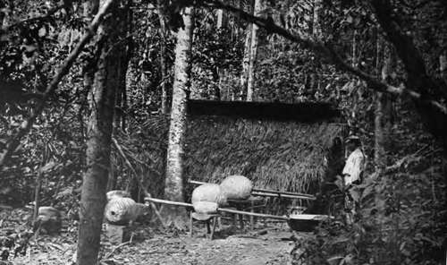
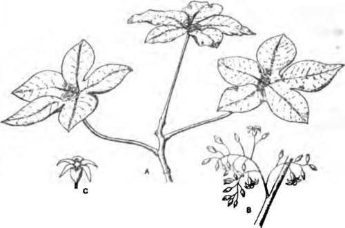

Economic Aspects Of The Amazon Rubber Industry
Description
This section is from the book "Rubber And Rubber Planting", by R. H. Lock. Also available from Amazon: Rubber And Rubber Planting.
Economic Aspects Of The Amazon Rubber Industry
The country which produces Para rubber lies in the States of Amazonas, Para and Acre. The pioneers of the industry are constantly pushing further afield up the different tributaries of the Amazon. When the country has been explored and the presence of a suitable number of Hevea trees ascertained, a grant of land is obtained from the Government of the State, and after the payment of certain taxes, the land becomes private property.
The owner of the property is usually not himself a large capitalist. In order to finance his enterprise, he obtains a loan at a high rate of interest from a trader or rubber merchant. Labour is chiefly imported from the barren region of Ceara. The labourers often arrive at the base of the expedition in a practically destitute condition, and provision has to be made in advance for food supplies, tools and transport. All supplies have to be obtained from traders naturally at high prices and all must be carried long distances by steamer to the scene of operations. For working a seringal, or estate, of 200 estrades, an advance of 180,000 milreis, or nearly £10,000, including interest, may be required.
The paths of the seringal are practically sublet to the individual seringueiros, who have to pay for their food, tools, transport, etc., at high prices, together with interest on the loan advanced to them for incidental expenses, out of the value of the rubber which they obtain. Since the rubber must be sold by the owner to the trader, and by the trader to the exporting firm, very little profit is generally left for the individual collector. The inland freights, moreover, are very high, and an export tax has to be paid on the rubber at the rate of nearly 20 per cent ad valorem.
The successful competition of the plantation industry in other parts of the world has recently led to active legislation on the part of the Brazilian Government, with a view to removing as far as possible the handicaps under which the wild rubber industry has hitherto laboured. These fall mainly under the heads of expensive labour, heavy transport rates and high export duty. So long as the price of rubber remains high, the Brazilian capitalist is able to pay for the high cost of production plus the high freights and taxes, but as soon as the price of rubber falls below three shillings a pound, the pinch will be severely felt, not only by the individual owner but also by the country in general, for the latter depends largely upon the export of rubber for its revenue.
Plate III
Forest scene, showing preparation of Hard
Special concessions are now being made to encourage the introduction of foreign capital and the opening up of plantations, by the granting of premiums and remission of taxes. In addition, the Federal Government is taking steps:
1. To encourage rubber collection and cultivation by advancing money on easy terms, and by the offer of premiums on new plantations.
2. To encourage industries for the manufacture of rubber goods also by the offer of premiums.
3. To help the regular workers and immigrant labourers by the provision of special boarding establishments and hospitals and by the sale of stores at cost price.
4. To reduce the cost of transport by opening railways and improving the navigation of rivers.
5. To encourage the production of foodstuffs in the Amazon Valley, in order to obviate the necessity of transporting such materials for long distances.
6. To hold triennial exhibitions in Rio de Janeiro of everything relating to the rubber industry of the country.
And last but not least to open agricultural experiment stations in different parts of the country1.
1 Abridged from the Handbook of the Third International Rubber and Allied Trades Exhibition, New York, tgii.
Manihot Glaziovii
This species, the source of Ceara rubber, extends over a wide area in North-Eastern Brazil. It is adapted to a drier climate than Hevea, and flourishes on a dry and rocky soil up to an altitude of about 4000 feet The plant is comparatively shrubby, branching close to the ground and rarely exceeding 30 feet in height. The bark has a hard surface, and readily peels off from the trunk like that of a cherry or birch tree.
Fig. 2. Manihot Glaziovii.
A. Leaves. B. Inflorescence. C. Female flower.
Tapping is therefore a more difficult process than in the case of Hevea, although the latex and rubber obtained from the trunk are closely similar both in quality and relatively to the size of the tree in quantity. The raw rubber contains somewhat more resin than Hevea rubber, and, however carefully prepared, is quite distinguishable from the latter. The latex coagulates without acid, on the mere addition of water.
The leaves are generally three-lobed, and afford a very dense shade, but the trees are markedly deciduous and remain bare of leaves for a considerable period. The seeds, which resemble those of the castor oil plant, are very hard. They retain their vitality for a long period, and do not germinate readily unless the shell is filed through. The roots are tuberous like those of the allied species Manihot utilissima, the cassava plant.
Owing to the difficulties which attend the tapping of the stem, the wild Ceara rubber is often tapped at the roots or very close to the ground. The latex is then simply collected in small cavities in the ground, opened wherever the subterranean organs are discovered. The cavities are usually lined with clay or leaves, but such a method of collection naturally leads to the production of a very impure form of cake or lump rubber. "Ceara scrap" is obtained by gashing the stems with a knife. The latex oozes out and is allowed to dry upon the bark. It is then pulled off in strings, which are either rolled up into balls or put into bags in loose masses.
Continue to: